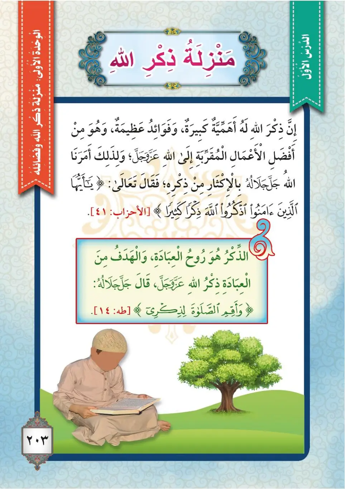
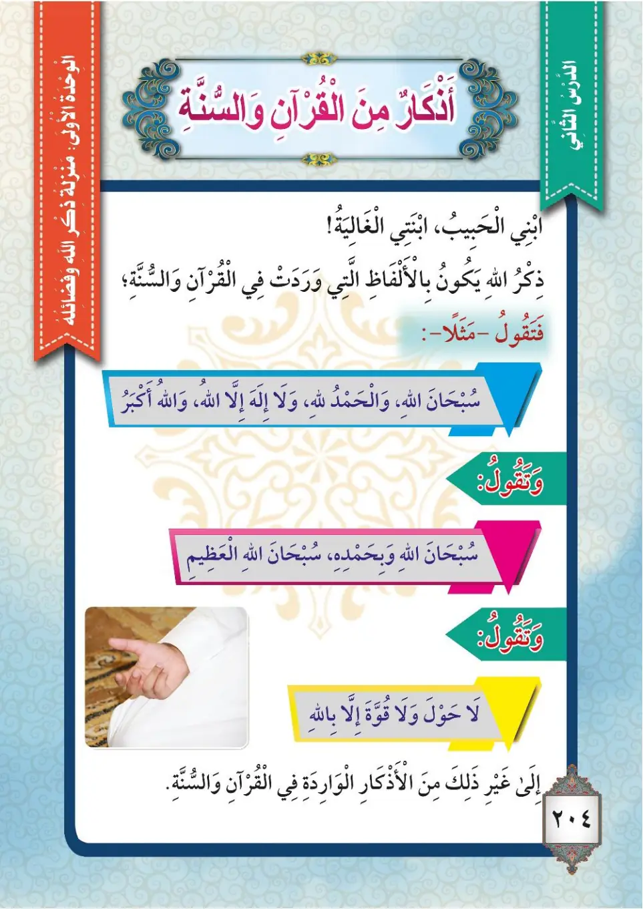
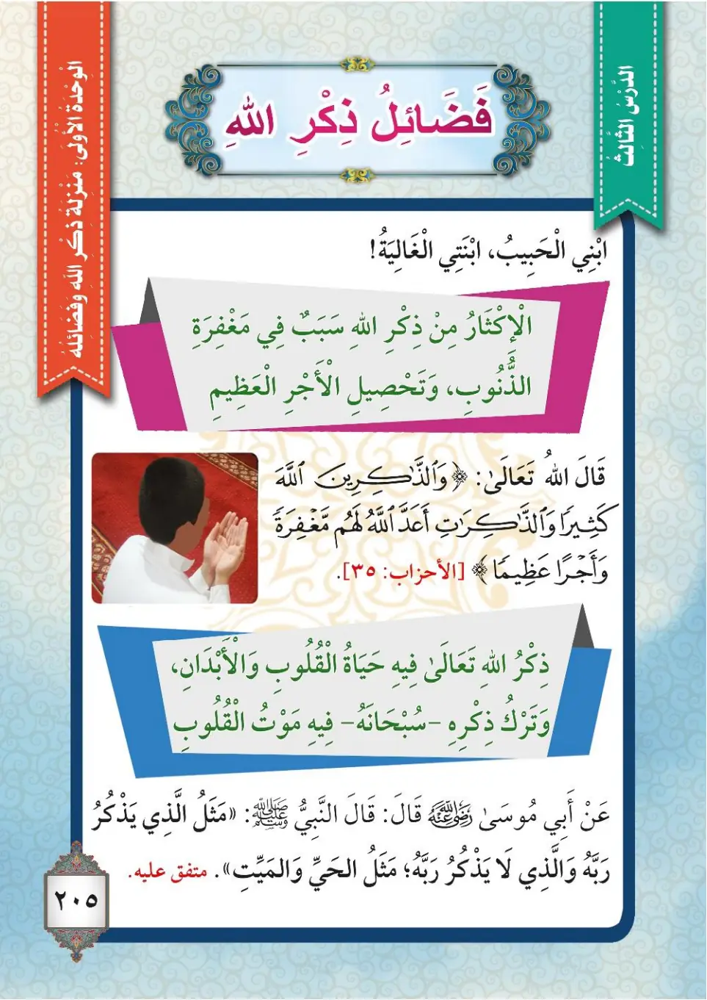
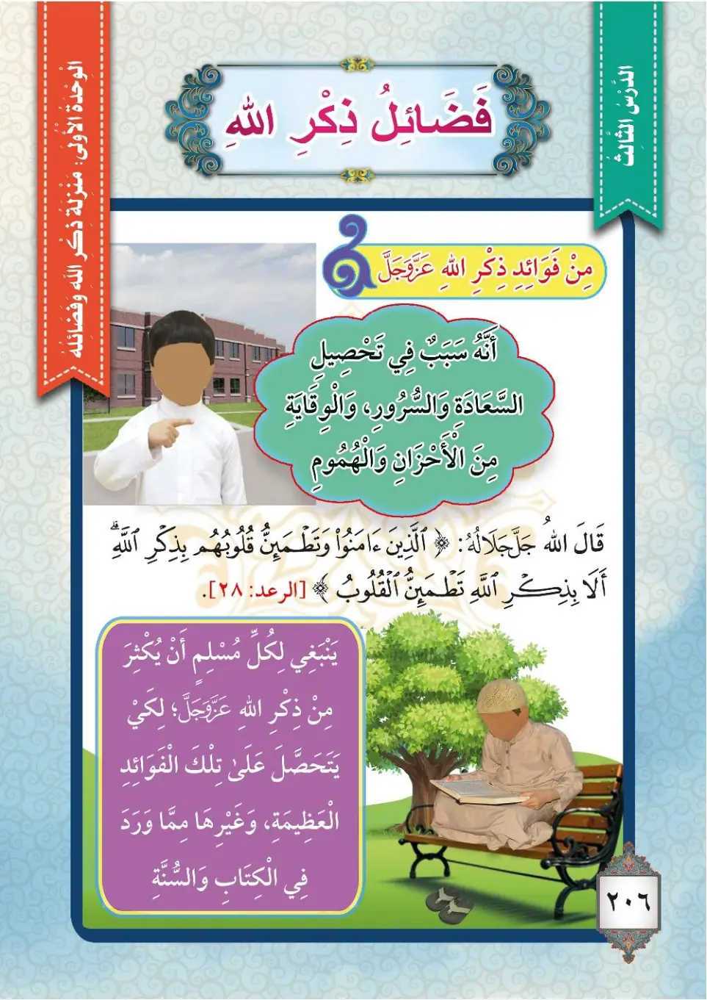

Stage 3·المرحلة الثالثة💬 Unit 1
فَضْلُ ذِكْرِ اللهِ The Virtue of Remembering Allah
From the Textbookpp. 204–207




الذكرُ هو حياةُ القلوبِ وروحُ العبادةِ، وقد أمرَنا اللهُ عزَّ وجلَّ بالإكثارِ من ذكره؛ لأنَّ له أهميةً كبيرةً وفوائدَ عظيمةً، وهو من أفضلِ الأعمالِ المقرِّبةِ إلى اللهِ تعالى. فقال تعالى: ﴿يَا أَيُّهَا الَّذِينَ آمَنُوا اذْكُرُوا اللهَ ذِكْرًا كَثِيرًا﴾ (الأحزاب: ٤١).
Adh-dhikru huwa hayatu al-qulubi wa ruhu al-'ibadah, wa qad amaruna Allahu 'azza wa jalla bil-ikthari min dhikrihi; li'anna lahu ahammiyyatan kabiratan wa fawa'ida 'azhimah, wa huwa min afdali al-a'mali al-muqarribati ila Allahi ta'ala. Faqala ta'ala: «Ya ayyuha alladhina amanu dhkurullaha dhikran kathira» (Al-Ahzab: 41).
Remembrance (dhikr) is the life of the hearts and the spirit of worship. Allah the Exalted has commanded us to remember Him much, because it has great importance and mighty benefits, and it is one of the best deeds that bring a person closer to Allah the Exalted.
Allah the Exalted said: "O you who believe, remember Allah with much remembrance" (Al-Ahzab: 41).
திக்ர் (இறைவனை நினைவுகூர்தல்) என்பது இதயங்களின் உயிர்; வணக்கத்தின் சாரம். இறைவன் அதிகமாக தம்மை நினைவுகூருமாறு கட்டளையிட்டான்; அது மகத்தான நன்மைகளையும், மேலான சிறப்பையும் கொண்டுள்ளது; இறைவனை நெருங்கச்செய்யும் சிறந்த செயல்களில் ஒன்று.
இறைவன் கூறினான்: "நம்பிக்கையாளர்களே! அல்லாஹ்வை அதிகமாக நினைவுகூருங்கள்" (33:41).
﴿وَالذَّاكِرِينَ اللهَ كَثِيرًا وَالذَّاكِرَاتِ أَعَدَّ اللهُ لَهُمْ مَغْفِرَةً وَأَجْرًا عَظِيمًا﴾
Wa-zh-dhakirina Allaha kathiran wa-zh-dhakirati a'adda Allahu lahum maghfiratan wa ajran 'azhima.
And the men who remember Allah often and the women who do so: for them Allah has prepared forgiveness and a great reward.
அல்லாஹ்வை அதிகம் நினைவுகூரும் ஆண்களுக்கும் பெண்களுக்கும் அல்லாஹ் மன்னிப்பையும் மகத்தான நற்கூலியையும் தயார் செய்துள்ளான்.
عن أبي موسى الأشعريِّ رضي الله عنه قال: قال رسولُ اللهِ ﷺ: «مثلُ الذي يذكرُ ربَّه والذي لا يذكرُ ربَّه، مثلُ الحيِّ والميِّتِ». أخرجه البخاري.
'An Abi Musa al-Ash'ariyya radiyallahu 'anhu qal: qal rasulullahi ﷺ: «Mathalu alladhi yadhkuru rabbahu wa-alladhi la yadhkuru rabbahu, mathalu al-hayyi wal-mayyiti». Akhrajahu al-Bukhari.
Abu Musa al-Ash'ari, may Allah be pleased with him, said: The Messenger of Allah ﷺ said: "The example of the one who remembers his Lord and the one who does not remember his Lord is like the example of the living and the dead." Narrated by Al-Bukhari.
அபூ மூஸா அல்-அஷ்அரீ (ரலி) கூறினார்கள்: "தம் இறைவனை நினைவுகூர்பவருக்கும் நினைவுகூராதவருக்கும் உதாரணம் உயிருள்ளவருக்கும் இறந்தவருக்கும் உள்ள உதாரணம் போன்றது" என்று நபி ﷺ கூறினார்கள். (புகாரி)
﴿أَلَا بِذِكْرِ اللهِ تَطْمَئِنُّ الْقُلُوبُ﴾
Ala bidhikrillahi tatma'innu al-qulub.
Verily, in the remembrance of Allah do hearts find rest.
நிச்சயமாக அல்லாஹ்வின் நினைவால் இதயங்கள் அமைதி அடைகின்றன.
من فوائدِ ذكرِ اللهِ تعالى: ١- أنه سببٌ في تحصيلِ السعادةِ والسرورِ. ٢- والوقايةِ من الهمومِ والأحزانِ وتفريجِ الكروبِ. ٣- والاكثارُ من ذكرِ اللهِ سببٌ في مغفرةِ الذنوبِ وتحصيلِ الأجرِ العظيمِ. ٤- والذكرُ حياةٌ للقلوبِ، وتركُه موتٌ لها. فعلى كلِّ مسلمٍ أن يُكثرَ من ذكرِ اللهِ عزَّ وجلَّ، حتى يتحصَّلَ على تلكَ الفوائدِ العظيمةِ.
Min fawa'idi dhikrillahi ta'ala: 1- innahu sababun fi tahsili as-sa'adati was-surur. 2- wal-wiqayati mina al-humumi wal-ahzani wa tafriji al-kurub. 3- wal-iktharu min dhikrillahi sababun fi maghfirati adh-dhunubi wa tahsili al-ajri al-'azhim. 4- wad-dhikru hayatun lil-qulubi, wa tarkuhu mawtun laha. Fa'ala kulli muslimin an yukthira min dhikrillahi 'azza wa jalla, hatta yatahassala 'ala tilka al-fawa'idi al-'azhimah.
From the benefits of remembering Allah the Exalted:
1. It is a means of attaining happiness and joy.
2. It protects from worries and sorrows and relieves distress.
3. Remembering Allah much is a means of forgiveness of sins and attaining the great reward.
4. Remembrance is life for the hearts, and abandoning it is death for them.
So every Muslim should remember Allah the Exalted much, in order to attain these great benefits.
அல்லாஹ்வை நினைவுகூர்வதன் நன்மைகள்:
1. மகிழ்ச்சிக்கும் மன மகிழ்ச்சிக்கும் காரணம்.
2. கவலைகள், துக்கங்கள் ஆகியவற்றிலிருந்து பாதுகாத்து துன்பங்களை நீக்கும்.
3. பாவ மன்னிப்பிற்கும் மகத்தான நற்கூலிக்கும் காரணம்.
4. இதயங்களுக்கு உயிர்; அதை விடுவது இதய மரணத்திற்கு காரணம்.
எனவே ஒவ்வொரு முஸ்லிமும் இந்த மகத்தான நன்மைகளை அடைய இறைவனை அதிகம் நினைவுகூர வேண்டும்.